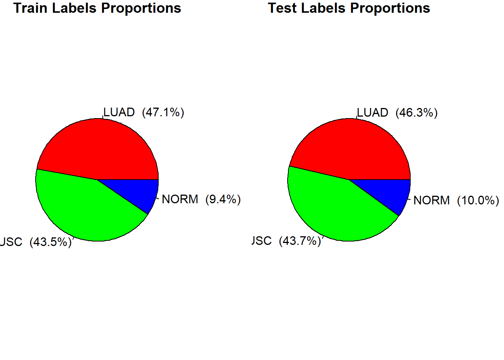
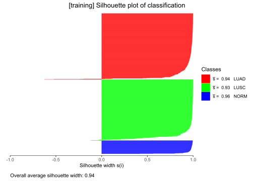
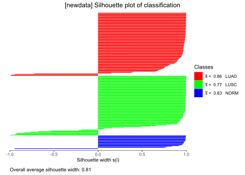
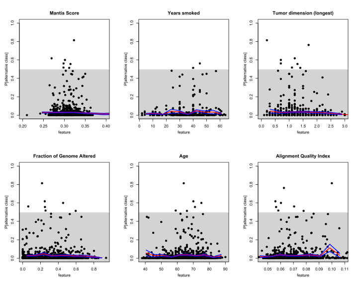
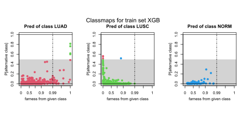
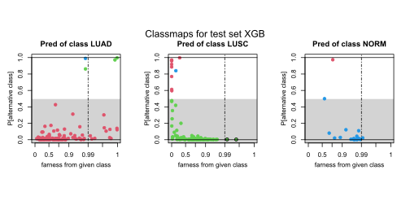

knitr::opts_chunk$set(echo = TRUE)Can be examined on data_load_and_preprocess.Rmd/html auxillary notebook, here it is only loaded:
source(here::here("scripts","Rmds","data_load_and_preprocess.R"))## here() starts at C:/Users/Admin/OneDrive - Alma Mater Studiorum Università di Bologna/Thesis/LUNG-TCGA-Classifications-Graphical-Analysis
Load feature selected by “pamr”:
selected_genes=read.csv(here("output/selected_genes.csv"))Additional formatting to adapt to format request of XGBoost algorithm, subsetting to selected genes by “pamr” and adding “Alignment Quality Index” as covariate:
traindata-ynum integer (0,1,2) corresponds to the levels (LUAD,LUSC,NORM) of traindata-y
traindata$ynum=as.integer(traindata$y) - 1
traindata$x=t(traindata$x[selected_genes$sgenes_indexTh,])
traindata$x=cbind(traindata$x,traindata$covariates$`Alignment Quality Index`) #add AQI to index
colnames(traindata$x)[ncol(traindata$x)] <- 'Alignment Quality Index'
testdata$ynum=as.integer(testdata$y) - 1
testdata$x=t(testdata$x[selected_genes$sgenes_indexTh,])
testdata$x=cbind(testdata$x,testdata$covariates$`Alignment Quality Index`) #add AQI to index
colnames(testdata$x)[ncol(testdata$x)] <- 'Alignment Quality Index'
numclass=length(unique(traindata$ynum)) #needed by XGBoost inputprint(paste0("Nr. training obvs: ", length(traindata$y))) #code not included in output## [1] "Nr. training obvs: 922"print(paste0("Nr. test obvs: ", length(testdata$y)))## [1] "Nr. test obvs: 231"print((paste0("Nr. of features (genes) selected: ", (ncol(traindata$x)))))## [1] "Nr. of features (genes) selected: 15"library(xgboost)
xgb_model <- xgboost(data = traindata$x, label=traindata$ynum, num_class=numclass,
nrounds = 100,
eta=0.1,
gamma=0.1,
max_depth=3,
colsample_bytree=0.4,
min_child_weight=3,
objective="multi:softprob",verbose = FALSE)Preparing the quantities for them through the flexible function
No particular computations needed, just compute and feed the posteriors.
Posteriors for both train and test set:
traindata$posteriors = predict(xgb_model,traindata$x,reshape=T)
colnames(traindata$posteriors) = levels(traindata$y)
traindata$ypred = apply(traindata$posteriors,1,function(x) colnames(traindata$posteriors)[which.max(x)])
testdata$posteriors = predict(xgb_model,testdata$x,reshape=T)
colnames(testdata$posteriors) = levels(traindata$y)
testdata$ypred = apply(testdata$posteriors,1,function(x) colnames(testdata$posteriors)[which.max(x)])Using the flexible function to just produce PAC and Sil values
#feeding only true labels and posteriors
vcrtrain=vcr.custom.train(traindata$y, probs=traindata$posteriors)
vcrtest=vcr.custom.newdata(testdata$y, probs=testdata$posteriors, vcr.custom.train.out=vcrtrain)Silplots:
confusionMatrix(factor(traindata$ypred), traindata$y) #can also put vcrtrain$ypred## Confusion Matrix and Statistics
##
## Reference
## Prediction LUAD LUSC NORM
## LUAD 430 3 0
## LUSC 4 397 0
## NORM 0 1 87
##
## Overall Statistics
##
## Accuracy : 0.9913
## 95% CI : (0.983, 0.9962)
## No Information Rate : 0.4707
## P-Value [Acc > NIR] : < 2.2e-16
##
## Kappa : 0.9851
##
## Mcnemar's Test P-Value : NA
##
## Statistics by Class:
##
## Class: LUAD Class: LUSC Class: NORM
## Sensitivity 0.9908 0.9900 1.00000
## Specificity 0.9939 0.9923 0.99880
## Pos Pred Value 0.9931 0.9900 0.98864
## Neg Pred Value 0.9918 0.9923 1.00000
## Prevalence 0.4707 0.4349 0.09436
## Detection Rate 0.4664 0.4306 0.09436
## Detection Prevalence 0.4696 0.4349 0.09544
## Balanced Accuracy 0.9923 0.9912 0.99940silplot(vcrtrain)## classNumber classLabel classSize classAveSi
## 1 LUAD 434 0.94
## 2 LUSC 401 0.93
## 3 NORM 87 0.96
confusionMatrix(factor(testdata$ypred), testdata$y)## Confusion Matrix and Statistics
##
## Reference
## Prediction LUAD LUSC NORM
## LUAD 103 9 1
## LUSC 3 91 0
## NORM 1 1 22
##
## Overall Statistics
##
## Accuracy : 0.9351
## 95% CI : (0.8952, 0.9632)
## No Information Rate : 0.4632
## P-Value [Acc > NIR] : <2e-16
##
## Kappa : 0.889
##
## Mcnemar's Test P-Value : 0.2615
##
## Statistics by Class:
##
## Class: LUAD Class: LUSC Class: NORM
## Sensitivity 0.9626 0.9010 0.95652
## Specificity 0.9194 0.9769 0.99038
## Pos Pred Value 0.9115 0.9681 0.91667
## Neg Pred Value 0.9661 0.9270 0.99517
## Prevalence 0.4632 0.4372 0.09957
## Detection Rate 0.4459 0.3939 0.09524
## Detection Prevalence 0.4892 0.4069 0.10390
## Balanced Accuracy 0.9410 0.9390 0.97345silplot(vcrtest)## classNumber classLabel classSize classAveSi
## 1 LUAD 107 0.86
## 2 LUSC 101 0.77
## 3 NORM 23 0.83
Qresplots (only produced for continuos covariates in traning set):
par(mfrow=c(2,3))
qresplot(vcrtrain$PAC,traindata$pancovariates$MSI.MANTIS.Score, plotErrorBars = TRUE,
main="Mantis Score", xlim=c(0.2,0.4))
qresplot(vcrtrain$PAC,traindata$covariates$years_smoked, plotErrorBars = TRUE,
main="Years smoked")
qresplot(vcrtrain$PAC,traindata$covariates$longest_dimension, plotErrorBars = TRUE,
main="Tumor dimension (longest)", xlim=c(0,3))
qresplot(vcrtrain$PAC,traindata$pancovariates$Fraction.Genome.Altered, plotErrorBars = TRUE,
main="Fraction of Genome Altered")
qresplot(vcrtrain$PAC,traindata$pancovariates$Diagnosis.Age, plotErrorBars = TRUE,
main="Age")
qresplot(vcrtrain$PAC,traindata$covariates$`Alignment Quality Index`, plotErrorBars = TRUE,
main="Alignment Quality Index", xlim = c(0.045,0.11), grid=seq(0.04, 0.11, length.out=10))
Here we need some additional compututations of some quantities.
To enable the classmap plot we should devise a proper way to measure
the distance of each observation \(i\)
to each given class \(g\) (D(\(i\),\(g\))) according to the trained classifier
view on the data. We should produce a “distance to class’ matrix for all
observations in the train set and another for the ones in the test set.
The matrices produced will be respectly feeded in
vcr.custom.train and vcr.custom.newdata and
will allow for Farness computation.
To produce D(\(i\),\(g\)) for our XGBoost model, which belongs to the large family of tree classifiers, we essentially build upon the same concept that Rousseuw and Raymakers established for basic classification tree algorithms (Supplementary Material section A.3 of Silhouttes and Quasi Residual Plots For Neural Nets and Tree-based Classifiers 2022 by Raymaekers and ROusseeuw).
To do that we start by computing pairwise dissimilarities between the
points in the training set by the gower metric (here
essentially a weighted euclidean since all feature are numeric weighted
for the average importance of the features in the classifier as
outputted in the Gain column after calling xgb.importance
on our model:
xgb.importance(model=xgb_model)## Feature Gain Cover Frequency
## 1: ENSG00000186081.12 0.223053181 0.11608782 0.07413249
## 2: ENSG00000134762.17 0.148713636 0.08827338 0.06230284
## 3: ENSG00000110400.11 0.118498532 0.08907816 0.06703470
## 4: ENSG00000204305.14 0.107965383 0.09807470 0.08832808
## 5: ENSG00000168484.12 0.105397287 0.06612362 0.06624606
## 6: ENSG00000069849.11 0.070144971 0.08552929 0.08517350
## 7: ENSG00000112378.12 0.043101175 0.07118255 0.07097792
## 8: ENSG00000105974.13 0.038372618 0.06782296 0.08753943
## 9: ENSG00000117595.12 0.034890446 0.07174900 0.07728707
## 10: ENSG00000081277.13 0.031500322 0.05265676 0.05599369
## 11: ENSG00000137699.17 0.023971069 0.02761616 0.03706625
## 12: Alignment Quality Index 0.019906627 0.05802726 0.08123028
## 13: ENSG00000205420.11 0.016726595 0.05536501 0.06309148
## 14: ENSG00000206075.14 0.009273105 0.02483596 0.04652997
## 15: ENSG00000161203.13 0.008485053 0.02757735 0.03706625traindata$importance=xgb.importance(model=xgb_model)
traindata$weight=rep(0,ncol(traindata$x)) #contains weight for all genes
#in proper order
names(traindata$weight)=colnames(traindata$x)
for (i in 1:nrow(traindata$importance)) {
traindata$weight[as.character(traindata$importance[i,1])]=
as.numeric(traindata$importance[i,2])
}
feature_importance_xgb=stack(traindata[["weight"]])
write.csv(feature_importance_xgb, here::here("output/feature_importance_xgb.csv"), row.names = FALSE)library(cluster)
traindata$pwd=as.matrix(daisy(traindata$x, metric="gower", weights = traindata$weight))
any(is.na(traindata$pwd)) #check if there is any NAs (could happen if a weight is exactly zero)## [1] FALSE#we compute the pairwise dissimilarities also among observations of test:
#(will be needed later for mdscolorscale plot:)
testdata$pwd=as.matrix(daisy(testdata$x, metric="gower", weights = traindata$weight))
any(is.na(testdata$pwd)) #check if there is any NAs (could happen if a weight is exactly zero)## [1] FALSENow for the training set we compute the ‘distance to class’ matrix. We take, as the distance of a generic observation \(i\) to a generic class \(g\), the median among the \(k=5\) smaller dissimilarities (because of locality nature of decision space of tree algorithms) between object \(i\) and the set of objects \(j\) actually belonging to class \(g\).
# Compute neighbors by sorting dissimilarities:
sortNgb <- t(apply(traindata$pwd, 1, order))[, -1] #contains indexes of nearest
#points for each row
sortDis <- t(apply(traindata$pwd, 1, sort))[, -1] #contains dimmilarieties
#values sorted
k=5 #neighbor to consider
yintv=as.numeric(traindata$y)
#create empty structure to fill:
traindata$distToClass <- matrix(rep(NA, nrow(traindata$x) * numclass), ncol = numclass)
for (i in seq_len(nrow(traindata$x))) { #loop over all cases
for (g in seq_len(numclass)) { #loop over classes
ngbg <- which(yintv[sortNgb[i, ]] == g) #getting indexes of all in the same class
if (length(ngbg) > k) {ngbg <- ngbg[seq_len(k)]} #getting the k nearer
traindata$distToClass[i, g] <- median(sortDis[i, ngbg]) #take the median of the k nearer
}
}Ultimately, to compute the ‘distance to class’ matrix for the cases in the test set we should only use the given considered case and the information from the train set. So each test case is taken separately and the pairwise distances are calculated on the set composed by the training observation plus the test case considered. Then the distance between the case and the generic class is computed exactly like before, that is by taking the median among the k=5 smaller dissimilarities between and the set of training objects actually belonging to class . (running this chunk may take a while cause of the nested loops)
testdata$newDistToClass <- matrix(rep(NA, nrow(testdata$x) * numclass), ncol = numclass)
for (i in 1:nrow(testdata$x)){
testtrain=rbind(testdata$x[i,], traindata$x)
yintv=rbind(as.numeric(testdata$label)[i],as.numeric(traindata$y)) #add also true int label of test for structure consistencies (anyway after will be not considered)
testtrainpwd=as.matrix(daisy(testtrain, metric="gower", weights = traindata$weight))
sortNgb <- t(apply(testtrainpwd, 1, order))[1, -1] #taking first row we take the i test obvs
sortDis <- t(apply(testtrainpwd, 1, sort))[1, -1]
for (g in seq_len(3)) { # loop over classes
ngbg <- which(yintv[sortNgb] == g) #getting indexes of all in the considered
if (length(ngbg) > k) {ngbg <- ngbg[seq_len(k)]} #getting the k nearer
testdata$newDistToClass[i,g] <- median(sortDis[ngbg]) #take the median of the k nearer
}
}Now it is possible to run vcr.custom.train/test
inputting also distToClass and allow for
farness computation that in turn allow for
classmap plots.
vcrtrain=vcr.custom.train(traindata$y, traindata$posteriors, distToClasses = traindata$distToClass)
vcrtest=vcr.custom.newdata(ynew = testdata$y , probs = testdata$posteriors ,
vcr.custom.train.out = vcrtrain, newDistToClasses = testdata$newDistToClass)Classmaps:
par(mfrow=c(1,3))
classmap(vcrtrain, whichclass = 1, main = "Pred of class LUAD" )
classmap(vcrtrain, whichclass = 2, main = "Pred of class LUSC")
classmap(vcrtrain, whichclass = 3, main = "Pred of class NORM")
mtext(paste0("Classmaps for train set XGB"), line=-5, side=3, outer=TRUE, cex=1)
par(mfrow=c(1,3))
classmap(vcrtest, whichclass = 1, main = "Pred of class LUAD" )
classmap(vcrtest, whichclass = 2, main = "Pred of class LUSC")
classmap(vcrtest, whichclass = 3, main = "Pred of class NORM")
mtext(paste0("Classmaps for test set XGB"), line=-5, side=3, outer=TRUE, cex=1)
MDS color-scaled plot feeding already computed pairwise dissimilarities:
mdscolorscale(vcrtrain, diss=traindata$pwd, main="(Train) MDScolorscale XGB")mdscolorscale(vcrtest, diss=testdata$pwd, main="(Test) MDScolorscale XGB")